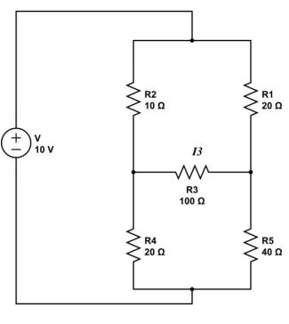
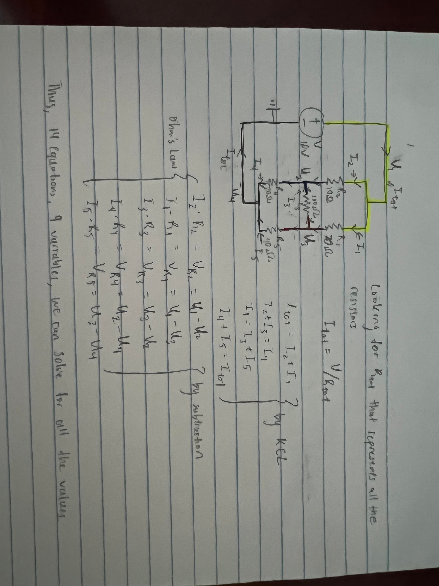
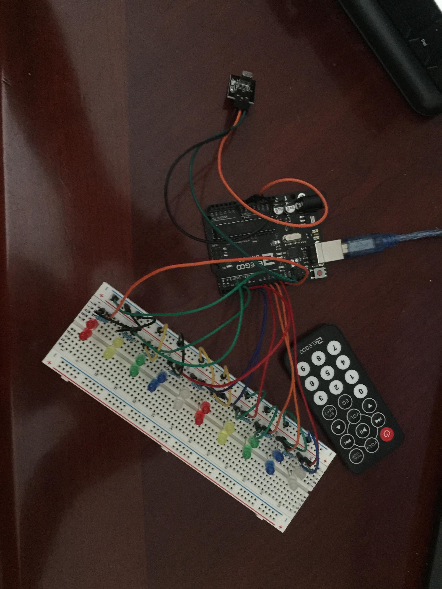

Hardware
We will dive right in with the information on Hardware, more specifically electrical engineering. This is a type of engineering that studies applications and designs of electricity in electronics. This means that we will be dealing with a bunch of tools that use electricty (if you want to experiment yourself, you can buy an elegoo kit). Below is a list and each one's function:
- Breadboard: These are where the electrical circuit prototypes are made so that they can be tested before minimization. They are electrically connected in a certain way, which makes it important to know how to connect different strips.
- Resistors: These are passive, electronic components which have a specific, never-changing electrical resistance. The resistor's resitance limits the flow of electrons through a circuit, which we will calculate using Ohm's law (which states that voltage is equal to current times resistance). Because they are passive, they do not consume or generate power. They are used to limit currents, divide voltages, and pull-up I/O lines (input and output lines). The electrical resistance of a resistor is measured in ohms, \(\Omega\). Note that most resistors will have color bands on them that identifies what resistance they are.
- Capacitors: These are also passive components that store electrical energy in an electric field. The ability for a system to store electrical charge is called capacitance and is measured in farads (F). Voltage across the capacitor and its capacitance dictates how much charge is stored in it using the formula $$\text{Q (charge)} = \text{C (capacitance)} \cdot \text{V (voltage)}$$ The current flowing through the capacitator is dictated by the capacitance and the rate of voltage change across the capacitor using the formula $$\text{I (current)} = \text{C (capacitance)} \cdot \frac{d\text{V}}{d\text{T}}\text{ (rate of change of voltage wrt time)}$$
- Inductors: These are also passive components that stores energy in a magnetic field when electric current flows through. Iductance (units = Henries[H]) is a measure of an inductors "resistance" to the change of the current flowing through the circuit. We once again have a formula: $$\text{V (voltage)} = \text{L (inductance in henries)} \cdot \frac{d\text{I}}{d\text{T}}$$
- Male/Female Wires: These are just wires that transmit electrical currents. They are called male and female wires because the parts that connect are different.
- Senors: There are many sensors that are used in the real world. A few of the most common ones are: Temperature, infrared, photoresistor, humidity, pressure, photoencoders
Now, we go over cirucit principles. The first one is that the current will always travel down the past of least resistance. This means that a current will not go through a resistor if there is an alternate path that is just a wire. The second is that nodes in a circuite share an endpoint. Each node has the same voltage through out it. The third one is set as two rules: Kirchhoffs Circuit Law (KCL) and Kirchhoffs Voltage Law (KVL). We will go into this next. The last one is series vs parallel. Elements in series share an endpoint node. Elements in parallel share both start and end node.
Focusing on KVL and KCL, we will be analyzing circuits and solving for nodes with them. KCL states that the total current or charge entering a junction or node is exactly equal to the charge leaving the node as a node is passive. KVL states that in any closed loop network, the total voltage around the loop is equal to the sum of all the voltages within the same loop, which is equal to 0. The three step process is breaking down circuits into different parts by lableling nodes. Then we find the equivalent V/I/R values for the entire circuit. Lastly, we create a system of equations to solve for each node. For example, we sill go over the famous wheatstone bridge circuit.
Before we go through an example, we need to go over resistance calculation for series and parallel. If we have \(n\) resistors, with resistance \(R_1, R_2, \dots, R_n\) respectively, we can calculate the total resistance. If they were in series, then we could just sum them up, which will be the total resistance. If they were in parallel, we would calculate the total resistance using $$\frac{1}{R_{tot}} = \frac{1}{R_1} + \frac{1}{R_2} + \dots + \frac{1}{R_n}$$
Next, we go over operation amplifiers, which are simplified to be "op-amps". Each op-amp has two input terminals (V+, V-), 2 rails (Vs+, Vs-), and one output terminal (Vout). These are very important because they add/multiply/differentiate/integrate signals, stabilize signals, filter signals, separates circuits to prevent loading effect, and amplify only true signals. For the ideal op-amp, there are 3 golden rules:
- The op-amp has infinite open-loop gain.
- No current flows into the +/- inputs of the op-amp
- V+ = V-
There are four common op-amp configurations: Comparator, Buffer, Non-inverting Amplifier, and Inverting Amplifier. The comparator compares two signals and rails to Vs+ or Vs- depending on which input (V- or V+) is larger. If V+ is larger, then Vout = Vs+. If V- is larger, then Vout = Vs-. If they are equal, then Vout is the average of Vs+ and Vs-. Under comparators, we have a special case, called negative and positive feedback where the V- or V+ is directly connected to Vout. Negative feedback is used more more often and it is used in control systems to create well controlled signals. This is because Vout = A(V+ - V-). The buffer configuration mirrors a voltage from a high-impendance input to a low inmpendance output. Non-inverting amplifiers are the opposite of inverting amplifiers which has an output voltage 180 degrees out of phase with the input voltage.
Just to note, everything will be done on a much more miniscule scale. The breadboard is a much larger version of a pcb (printed circuit board). We can scale this down using KiCad, a software.
Moving on, I will display my own project, which revolves around controlling LEDs using an IR sensor and a remote control. We can see that the little black box sticking out is the IR sensor. By pressing the different buttons on the remote control, I can control which lights turn on or off. I also coded in extra features such as a shift and XOR (which turns on all the lights that were off and vice versa). 